Hotéis

1. Gandini Hotel
O Gandini Hotel oferece 96 quartos confortáveis com internet gratuita, piscina, jacuzzi, espaço kids e restaurante com padrão internacional. Ideal para lazer ou trabalho, também dispõe de salas versáteis para eventos e parceria com academia próxima.
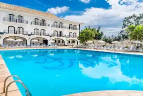
2. San Raphael Country
O San Raphael Country Hotel é um charmoso hotel-fazenda, com arquitetura colonial, lazer completo e estrutura para eventos corporativos com até 300 pessoas. Ideal para relaxamento em família ou encontros em meio à natureza com conforto e tradição.
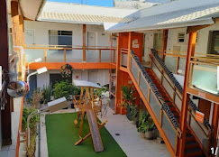
3. Hotel Itu Shopping
Autêntica culinária japonesa com peixes frescos.
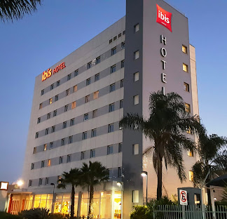
4. Ibis Itu Plaza Shopping
Rodízio completo com cortes nobres e buffet variado.
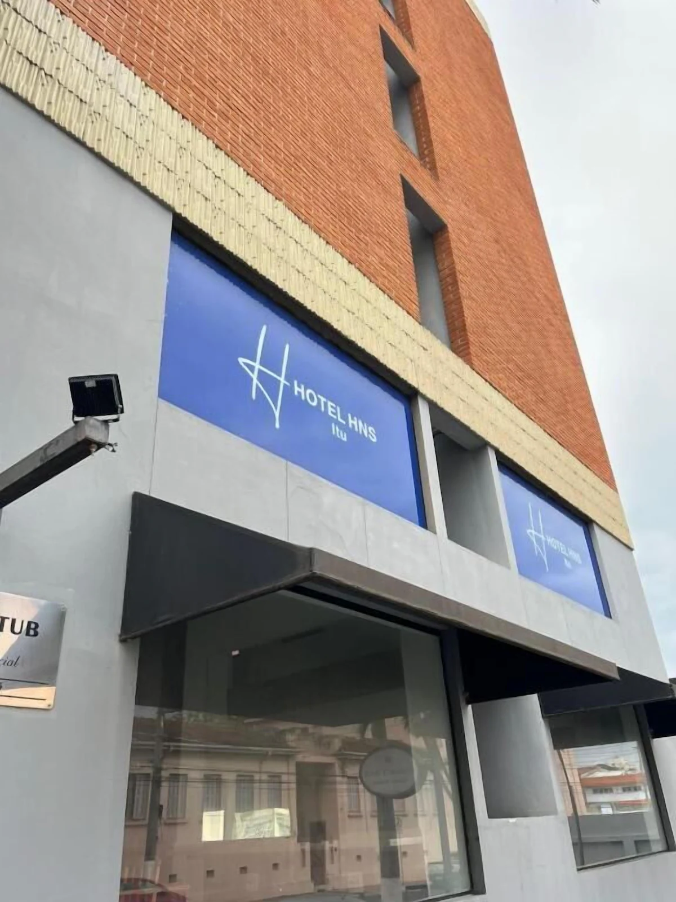
5. Hotel HNS
Pratos vegetarianos e veganos cheios de sabor.
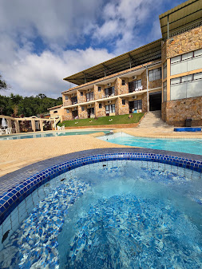
6. Quedaságua - Lazer e Hoespedagem
Frutos do mar frescos e ambiente praiano.
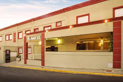
7. Hotel KK
Clássicos franceses em ambiente intimista.
8. Otho Hotel
Culinária italiana com toque caseiro.
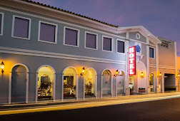
9. Hotel Colonial Plaza
Comida asiática variada e moderna.
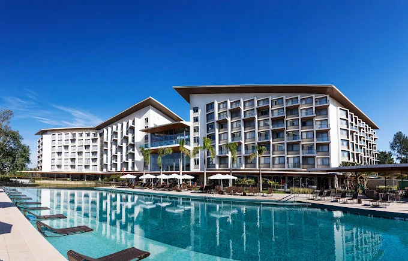
10. Hotel Novotel Itu Golf & Resort
Especialidade em carnes grelhadas na brasa.
Pousadas
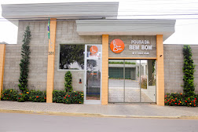
1. Hotel Pousada Bem Bom
Drinks especiais e música ao vivo.
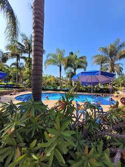
2. Casarão de Itu
Cervejas artesanais e petiscos clássicos.
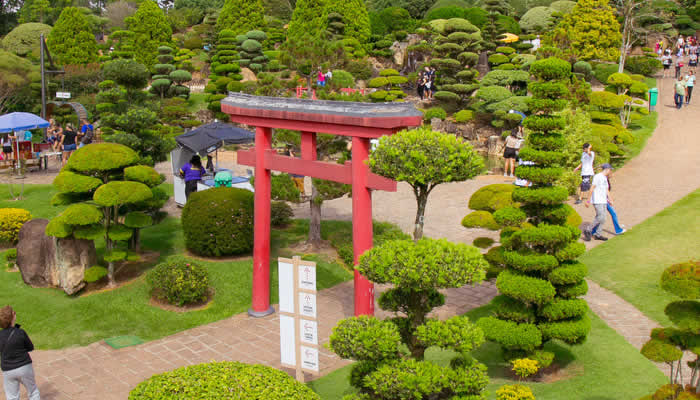
3. Parque Maeda
Drinks tropicais à beira da piscina.
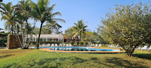
4. Pousada Corujas
Cervejas importadas e ambiente descontraído.

5. Toca do Tatu
Hotel Toca do Tatu, localizado em Itu/SP, é uma opção de hospedagem mais tranquila e simples, ideal para quem busca uma estadia aconchegante. Em vez de ser um grande resort, ele se apresenta mais como uma casa de hóspedes (guesthouse) ou uma pousada, focando em um ambiente familiar e acolhedor.
6. Hostel e Pousada Lua de Prata
Clássico encontro com samba e petiscos.
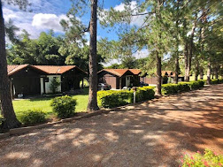
7. Pousada Chalés da Felicidade
Balada e drinks modernos.
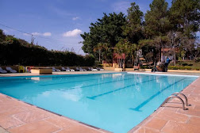
8. Pousada e Camping Carrion
Música ao vivo com bandas de rock.
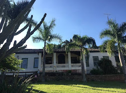
9. Fazenda Cana Verde Pousada & Polo School
Ambiente temático anos 80 e 90.
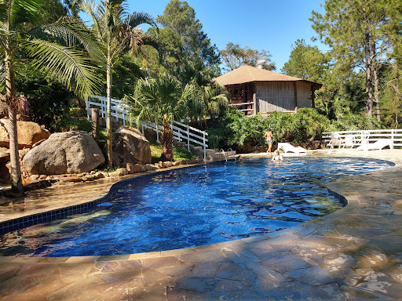
10. Camping - Chapéu de Sol
Drinks latinos e música cubana.